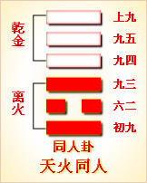

高岛易断 - 41山泽损
高岛易断 41 山泽损
卦体上山下泽，山高也，高者愈高，谓之益上；泽卑也，卑者愈卑，谓之损下。故下不可损，损在下而益在上，谓之《损》；下本当《益》，《益》在下而《损》在上，谓之《益》。《损》《益》之理固相反，而《损》《益》之用适相济。人第知其《损》也，而不知《益》即益其《损》；人第知《益》也，而不知《损》即损其《益》。是以《序卦》先《损》而后《益》。事先简而后烦，礼先俭而后奢，物先虚而后盈，故《易》道先《损》。损《兑》益《益》，所以为《损》。
损
［29］
：有孚，元吉，无咎，可贞，利有攸往。曷之用二簋，可用享。
“损”通咸，有心为感，无心为咸。咸，感孚也，故曰"有孚"，以其所损者，出于中心之诚，有足以见信于人也。不然，《损》主节俭，而俭不中礼，卒来讥刺，咎且难免，奚见"元吉"乎？惟损而"有孚"，斯人感其诚，自得"元吉"，复何咎？而可正，以斯而往，无往不利也。《损》俭如此，何用丰为乎？约之"二簋"，亦可"用享"，不特有孚于人，且可上孚夫神明矣。
《彖传》曰：损，损下益上，其道上行。损而有孚，元吉，无咎，可贞，利有攸往。曷之用二簋，可用享。二簋应有时，损刚益柔有时。损，益，盈，虚，与时偕行。
《损》，减省也，减《乾》下之刚，以益《坤》上之柔，故谓之"损下益上"，亦即"损刚益柔"也。《益》在于上，故谓之"其道上行"。"有孚"者，以孚行损，则《损》下而下不病其损，《益》上而上不嫌其益，上下交孚，吉莫大焉，复有何咎？"贞"，正也，谓可以正其未孚也。《艮》在上，《艮》止也，《艮》得其益，则不为止而为往，故曰"利有攸往"。《损》既"有孚"，《损》自"无咎"，何必用丰？《损》之又损，即"二簋"亦可"用享"矣。《震》为祭，《艮》为宗庙，有用享之象。"簋"，盛黍稷之器，按礼簋多用八用六，今用二，是从《损》也。享以诚孚，故虽二簋可也。然《损》宜应时，时而当《损》，太羹不以为俭；时不当《损》，豚肩终伤其隘。故损益盈虚，要贵"与时偕行"也。
以此卦拟人事，《损》，节省也，节财为《损》，节欲亦为《损》。节财所以利用；节欲在于清心，此固人事之要也。顾可损而《损》，虽损之而不以为《损》；不可损而《损》，即不损而已疑其《损》。凡人事之动辄得咎者，皆由于损其所《损》，而不能见信于人；不信于人，则有损无益，咎且不免，奚以得吉？或损大益小，止且不可，奚以能往？是以《损》卦，首曰"损，有孚"。卦体《艮》上《兑》下，《艮》，止也，《兑》，悦也，有孚则悦止相承，"山泽通气"，刚柔合志，上下交孚矣，不特在己愿受其损，即在人亦不疑其损。故用之于家，而财用省；用之于身，而情欲寡；极其用以格神明，而神明亦享其诚，从其啬，可无用丰也，有所往，乌乎不利也？夫亦因乎其时而已矣，若时不当损，而概从节俭，或讥其损人而益己，或斥其损公而益私，是为人事之患，咎复何辞？故人事当察夫天时，观日月之盈昃，寒暑之往来，即可知"损益，盈，虚，与时偕行"之道也。
以此卦拟国家，国家之制，田有赋，廛有征，货物出入有税，此皆损下以益上也。当其全盛，上不必须索夫下，下自乐输将夫上，上施其仁，下怀其德，朝野一心，无事则献豵私豜以奉上，有事则箪食壶浆以迎师，所谓信则民任者，此也。得其信，则上下交孚，其道有吉而无咎，其用无往而不利，其义贵与时而偕行，取其约勿取其丰，惟其诚不维其物，可以裕国，可以理财，推之亦即可以格宗庙。凡国家之损益盈虚，惟在法夫天以应夫时而已矣。六爻言《损》，酌盈虚，审彼我，度终始，义各有在。初"酌损"，二"弗损"，三"损一"，四"损疾"，五不曰损，上亦曰"弗损"。盖卦虽曰《损》，爻多不言损也。初、二、上皆曰"志"，三曰"疑"，四曰"喜"，五曰"祐"，其道皆取其孚也。盖治国之道，首在得民心，民心未得，虽上曰施其惠，而民不知感也；得其民心，民将曰小民之饮食日用，皆出自上之所施也，何敢自私其有乎？虽损之不以为怨也。《损》卦首揭"有孚"二字，其旨深远，最宜体玩。
通观全卦，卦下体，本《乾》三画皆刚，为有余而当损也；上体本《坤》三画皆柔，为不足而当益也，谓之"损下益上，其道上行"。《损》《益》为盛衰之机，亦即为《否》《泰》之兆。《损》自《泰》来，《益》自《否》来，《损》二五失位，《益》二五得位，可以见《否》《泰》之相反也。《损》《兑》有余，补《艮》不足，上下相洽，止悦相承，是以《益》卦不待孚而民悦，《损》卦必先孚而乃吉。以《损》为人情所不欲，然人情固忧缺乏而求盈，君子则恶盈满而思节。"二簋"虽薄，可享宗庙，道在以诚为贵耳。"二簋"指《兑》之二阳，谓其简略也。上卦爻辞，多取"有孚"之旨，下卦爻辞，多取用享之象，合之皆取悦而止之义。然非谓刚之尽可损，柔之尽可益也，时可损则《损》，时可益则《益》，非人之所能强致焉，故曰"损刚益柔有时，损益盈虚，与时偕行"。
《大象》曰：山下有泽，损。君子以惩忿窒欲。
地以益而成山，即以损而成泽。山泽本损益之物，不益则山必崩，不损则泽必涸，此卦之所以名《损》也。在人之易发而难制者，无如忿，易炽而难绝者，无如欲。君子见此象，知怒气之盛，势足拔山，故必惩之，以遏刚强之性；贪念之深，盈难填壑，故必窒之，以塞利窦之源。怒起于刚，"惩忿"以息其既往；贪牵于情，"窒欲"以闲其将来。《艮》山止而《兑》泽塞，皆有《损》之象焉。
【占】 问时运：目下行运不正，宜自惩忿。
○ 问营商：营商原在谋财，宜和气，不宜恃气，宜审利，不宜放利。
○ 问功名：忿欲不除，虽有功名，恐不能保其终也。
○ 问战征："山下有泽"，防山下深处，有敌兵埋伏。
○ 问婚姻：卦自《咸》《恒》来，女悦而男止，夫妇之道，得其正也。
○ 问家宅：此宅后有高山，前有深泽，地势颇险，宜开凿之使平。
○ 问讼事：不使气，不贪财，讼自平矣。
○ 问失物：不得。
○ 问六甲：单月生男，双月生女。
高岛易断 初九：已事遄往，无咎。酌损之。
《象传》曰：已事遄往，尚合志也。
初爻处卦之始，即为谋事之始也。"已事"者，已其事也，即《艮》止之意；"遄往"者，遄，速也。事既可已，即当"遄往"，一经因循，必致误事，是以有咎，故曰"已事遄往，无咎"。若事在可已不可已之间，已之则失业，不已则害公，惟当酌其轻重缓急之宜，故曰"酌损之"。《象传》以"尚合志"释之，"尚"作上，庶几也，"已事遄往"，庶几与上合志也。虞氏以"已"作祀，谓祭祀，祀事而云"酌损"，即《彖》所云"二簋可用享"之义。其说亦通。
【占】 问时运：已往莫追，目下宜急加勉，自可免咎。
○ 问战征：宜速进兵，不可迟缓，辎重粮食，亦须"酌损"。
○ 问营商：贩运宜速，审时度势，宜酌量前行，定可获利，必无咎也。
○ 问功名：速往则得，迟缓无成。
○ 问婚姻：即日迎娶，两姓好合。
○ 问家宅：须速他迁，吉。
○ 问讼事：即速了结罢讼。
○ 问失物：速寻可得。
○ 问六甲：生女。
【例】 友人某来曰：有朋友以急需借金，请占后日利害。筮得《损》之《蒙》。
断曰：爻居内卦，又在初位，内卦为《兑》，《兑》为口，有开口求人之象。爻辞曰"已事遄往，无咎"，谓当此时处困难，宜抛弃其事，赶急前往，以求救援，得季布之千金一诺，斯可无咎矣。"酌损之"者，谓其所借金数，或有不足，又宜酌量多寡，以赈其乏。玩此爻辞，知需用急切，有不可片刻宽缓者，缓即有咎；但所借之款，必有减少，亦不至空手而回也。
高岛易断 九二：利贞，征凶。弗损益之。
《象传》曰：九二利贞，中以为志也。
二处内卦之中，凡事之有待损之益之者，必其未协于中也，二得中，则以"弗损"为"利贞"。若不可损而损之，则损之反失中，是以"征凶"。《损》与《益》相对，人只知损其所《损》，以损为益，不知不损其所不损，不损乃为《益》。盖其所弗损弗益者，惟在守其中道而已，得其中，即"利贞"也。《象传》以"中以为志"释之，志，犹射之的，以中为的，志之于此也。
【占】 问时运：好运方来，不减不加，万事得中，自然获利。
○ 问战征：不必减粮，不必添兵，坚守中营，有胜无败；若鲁莽前往，恐有凶也。
○ 问营商：货物合宜，不必减价，无不获利。
○ 问功名：无荣无辱，青毡守旧。
○ 问婚姻：两姓门户相当，吉。
○ 问家宅：地位得中，不必添改，大利。
○ 问讼事：平和。
○ 问失物：原物无失。
○ 问六甲：生女。
【例】 友人某来曰：余为家兄在大阪垄断米市，大受亏耗，有献斡旋之策者，以电报来告，催余运送多金，犹得转败为胜。余恐再失，则受亏愈大，因占其成否如何？筮得《损》之《颐》。
断曰：卦象泽低而山高，知一时米价，大有高下之势。初次见价低，而多数约买，今临期腾贵，不能不如数应付，以致受耗。东京支店之金，不可动也，谓之"利贞"，若送金而往，谓之"征凶"。大阪本店虽亏，以东京支店维持之，自可挽回，谓之"弗损益之"。后果如所占。
【例】 明治六年，贵显某任某县县令，来请占气运，筮得《损》之《颐》。
断曰：《损》卦为损下而益上，二爻曰"弗损益之"，是明明言下不必损，上不必益也。今足下出任某县令，占得此爻，爻辞曰："九二：利贞，征凶。弗损益之。"以九二爻位得正，宜固守成规，不必改作，自得其利。若妄自更张，竞求进步，反致凶也，故无取于《损》，"弗损"即为"利贞"。足下其谨遵爻辞，行之可也。
高岛易断 六三：三人行，则损一人，一人行，则得其友。
《象传》曰：一人行；三则疑也。
六三辰在亥，得乾气，《乾》为人，又为行，三爻为三人，故曰"三人行"。《乾》上至三而变《兑》，是三损一也；上互《坤》，变《坤》之上画成《艮》，二阴一阳，故曰"一人行"。三为《损》卦主爻，居《兑》卦之终，《兑》为友，故曰"得其友"，是《艮》得其友也。盖天下事，一则不足，三则过之，以二为得中，乃奇偶之定数，是以"三人行"，则损其一以成二，一人行，则"得其友"亦成二。一而二，二而一，斯之为合志，不然，三人成众，众则人心不一，而疑惑生焉，故《象传》以"三则疑也"释之。
【占】 问时运：财运平平，少则获利，多则有损。利双月，不利单月。
○ 问战征：宜从兑方，一路进军，自有援兵相助，有胜无败。
○ 问营商：商业宜于一人独做，否则二人同办，再多则必有损。
○ 问功名：须一人独往，必得成名。
○ 问婚姻：得友，即得偶也，吉。
○ 问家宅：宅在兑方，宅中丁口，每家只有两丁可断。
○ 问讼事：两造成讼，为中有一人唆弄所致，去此一人，则讼了矣。
○ 问六甲：生女。
【例】 明治二十五年四月，余任北海道炭矿铁道会社长之役，将赴所在，占改正处分如何，筮得《损》之《大畜》。
断曰：卦体《艮》山《兑》泽，卦德损下益上，明见上卦之山愈高，下卦之泽愈低，有上下不通之势。上下不通，必致事务阻碍，弊端百出，会社因之招损失也。今余恭任社长，势不可不淘汰人员，革除敝害，然此社之弊有二：一系社务，不专关营利主义，一系社员，多由官吏而来；不关营利主义，则社用之出纳无准，由官吏而来，则社规之约束难齐，于是耗费多，冗员众，社中诸务，皆有名无实而已。余欲振兴会社，所以不能不锐意改革也。今占得三爻，玩绎爻辞，是明明告我三分中损一之法也。
余得此卦，遂单身赴北海道，断行改革，先减役员三分之一，开其端绪，自是而社务遂大得整顿。
【例】 明治二十五年，余为北海道炭矿会社社长，时因石炭之贩路有碍，所采掘石炭，堆聚不售，社员皆为焦心。筮得《损》之《大畜》。
断曰：据爻辞称"三人行，则损一人，一人行，则得友"，是明示以少则得利，多则有损，为目下之情形也。至四爻，则曰"损其疾，使遄有喜"，是明言去其货之劣者，使往售而有喜也。五爻则曰"或益之十朋之龟，弗克违，元吉"，按古者货贝五朋，是明言必将益价，莫之能违，是以大吉；上爻则曰"弗损益之，利有攸往"，是明言价格上落，可以到处销售，自能获利也。此后出《损》入《益》，《益》《彖》曰"利有攸往，利涉大川"，是明言可以贩运出洋，销行于外国也。《益》六爻，皆有畅销获利之象，由此推之，以一爻为一年，洞悉九年如一日，集社员示以此断。
果哉！二十五年，多蓄石炭，二十六年贩路顿开，照此占辞，料知此后社务，必可隆昌也。
【例】 友人某来，请占事业之成否，筮得《损》之《大畜》。
断曰：此卦山高而上耸，泽低而下陷，山泽不通气，有草木不生，鱼龟不育之象。今占得三爻，爻辞大旨，谓三人则损，一人则得，知合众兴事，必多意见不合，反致损失。足下能独力成事，必得同心之友来助，可以兴业而有为也。
【例】 明治三十二年一月，自由党与政府提携议会，所议渐合政府之意，自由党乃推选三人，请置大臣之位，政府不允，诸新闻多论其可否。某议员来，请占自由党之意向，果否贯彻，筮得《损》之《大畜》。
断曰：此卦外卦为政府，内卦为党员，党员向政府推举大臣，政府秉《艮》止之性，不允其请，是下悦上止，故名其卦曰《损》。六三阴爻，与上九阳爻相应，故党员之意，得达政府，在政府为今进党员三人，不得不点大臣三人，是政府之所以为难也。或三人中选用二人乎？谓之"三人行，则损一人"；或只用一人乎？谓之"一人行，则得其友"也。
他日偶晤板垣伯，谈及此占，相与一笑。后因党内有猜忌者，此事遂止。
高岛易断 六四：损其疾，使遄有喜，无咎。
《象传》曰：损其疾，亦可喜也。
此爻以阴居阴，为外卦之始，与初九相应，初动体《坎》，《坎》为心病，疾所由生。疾曰"其疾"，"其"指初也，得四为之应，内外皆知所当损，而决计损之，则事之《损》犹在后，疾之《损》为在先也。疾《损》而"遄"，"遄"者初，使之遄者，四也。盖有疾则忧，疾《损》则喜，故"无咎"也。《象传》以"亦可喜"释之，谓不必言《损》事，但言《损》疾，而亦可喜，则《损》事之喜，更可知矣。
【占】 问时运：目下虽有小灾，得救即疗，可以转忧为喜。
○ 问营商：货宜减办，使之即往贩售，获利可喜。
○ 问战征：未免遭伤，医治可疗，无咎。
○ 问家宅：此宅阴气过盛，宅眷致多疾病，祈祷可疗，无咎。
○ 问功名：一时难望。
○ 问婚姻：四与初相应，初阳四阴，阴阳相合，必成可喜。
○ 问讼事："疾"者，害也，去其所害，讼自平矣。
○ 问行人：有事他往，一时未归，有喜无咎。
○ 问六甲：生男。
【例】 工部省书记杉实信氏，予旧亲也。明治十五年二月某日晨起得电报，云杉氏罹急疾，余惊而筮之，得《损》之《睽》。
断曰：观爻辞，已得明示，谓此病颇重，使名医速施治疗，可立愈也；若迁缓过期，虽名医亦将束手，故曰"损其疾，使遄有喜，无咎"。
不幸夜来，大雪纷飞，杜绝行道，朝来风雪益狂，余冒雪赴品川，访于氏之病室，医师皆为大雪所阻，延期不到，果即日死去。亦天数也，可叹可悼！
高岛易断 六五：或益之十朋之龟，弗克违，元吉。
［30］
《象传》曰：六五元吉，自上祐也。
"十朋之龟"，元龟长一尺二寸，直二千一百六十，为大贝十朋；公龟九寸以上，直五百，为牡贝十朋；侯龟七寸以上，直三百，为公贝十朋；子龟五寸以上，直百，为小贝十朋——见《汉书》。《坤》数十，又偶为朋，故有"十朋"之象。龟者灵物，能前知吉凶，为卜质吉凶之具。此爻柔顺得中，诚孚于下，故人献其诚。"或益之十朋之龟"，"或"者，不知其所从来之辞，意外之益，君子疑焉，故问之于卜筮。理数已定，十朋之元龟，不能违，其吉可知，故曰"十朋之龟，弗克违，元吉"。《象传》以"自上保祐也"释之，"上祐"者，"自天祐之"也。以爻象言，"上"指上爻，谓上能辅祐六五之君也。
【占】 问时运：运途全盛，可得意外宠遇。
○ 问战征：军事先卜，其兆大吉。
○ 问营商：财运之来，虽辞不去。
○ 问功名："自天祐之，吉无不利"。
○ 问家宅：家业兴隆，不卜可知。
○ 问婚姻：天作之合，吉。
○ 问疾病：病愈之后，且可得财，吉。
○ 问六甲：生男。
【例】 东京豪商某家甲干某来，曰仆受本店之命，担任大藏省用务，率数百人以从事。近闻明年大藏省将有改革，此事拟废，则仆所管数百人，一时皆失其业，实所不忍。今转谋于某会社，欲授此等人以相当之业，请占其可否？筮得《损》之《中孚》。
断曰：此爻以阳居五，位得中正，可知足下秉心正直，当久任其事，不必转而他往也。"十"朋之龟"者，谓将来有意外之幸福也。今者大藏省有改革之议，其中或损或益，足下别有担任之务，此数百人，因之得福，亦未可知。就爻位推之，明年当上爻，爻辞曰"弗损益之，无咎，贞吉，利有攸往"，明年无所损益，且贞吉有利，此事务或不复拟废，亦未定也。总之足下与此数百人，皆得无咎且吉，不必怀忧。某大喜，后果如此占。
高岛易断 上九：弗损益之，无咎，贞吉。利有攸往，得臣无家。
《象传》曰：弗损益之，大得志也。
此爻居《损》之极，不可复损也，曰"弗损益之"，其辞与二同，其义与二别。上与三应，三处当《损》之位，人或疑《损》三以《益》上，三之《损》实为上之《益》也，故特示之曰"弗损益之"，以明三虽有损，而于上则无所损益焉。无损则事皆平均而"无咎"，理得安详而"贞吉"。"利有攸往"，即《彖传》所称"与时偕行"之义，上为《艮》之极，极则变，故不为止而为往也。上互《坤》，《坤》为臣，《艮》为家，《艮》动而变《坤》，"得臣无家"之象。弗损下以益上，是王者以天下为家，臣下化之，亦皆国而忘家，故曰"得臣无家"。《象传》以"大得志"释之，谓王者以不损益为《益》，潜移默化，不见其迹，志量之所及甚大，故曰"大得志也"。
【占】 问时运：目下绝无窒碍，所往皆利，大吉。
○ 问战征：军队不须添减，率此以往，攻克战胜，无往不利，可"大得志也"。
○ 问营商：货价无甚上落，往售皆可获利，大吉。
○ 问功名：目下即可得志。
○ 问家宅：此宅不必改造，自得吉利。
○ 问疾病：当出外求医，无咎。
○ 问行人：在外大吉，一时未必归家。
○ 问六甲：生男。
【例】 明治九年，长崎商人大浦阿启与神代某来，曰：前自驿递局，借与横滨制铁所，从事船舶修缮费用，后因得不偿失，大被亏损，计将返纳于驿递局，或转让与他人。两者未决，请占其孰可？筮得《损》之《临》。
断曰：此爻为《损》之极，今后更无所损，不损则必有所益，故其辞曰"弗损益之，无咎，贞吉，利有攸往"也。二友信之，遂决计续承其业，翌年有西南之役，船舶繁多，大得利益云。
周易 - 41山泽损

|

|
 | |
| 本卦 | 互卦 | 错卦 | 综卦 |
周易第四十一卦详解
损卦原文
损。有孚，元吉，无咎，可贞。利有攸往。曷之用？二簋可用享。
象曰：山下有泽，损。君子以征忿窒欲。
白话文解释
损卦：筮遇此卦，将有所俘获，大吉大利，没有灾难，是称心的卜问。而且所往将获利。将有人送来两盆食物，可享口福。
《象辞》说：本卦上卦为艮，艮为山；下卦为兑，兑为泽，可见山下有泽是损卦的卦象。君子观此卦象，以泽水浸蚀山脚为戒，从而制止其忿怒，杜塞其贪欲。
《断易天机》解
损卦艮上兑下，为艮宫三世卦。损象征损益、减少，为损己之兆，多主不吉，但只要坚守诚信，就会有利。
北宋易学家邵雍解
损下益上，损盈益虚；先难后易，量入为出。
得此卦者，损己利人，虽然开始会有所不顺，但付出总会有所回报，因祸得福之象。
台湾国学大儒傅佩荣解
时运：心平气和，才有发展。
财运：和气生财，损己利人。
家宅：地势宜平；夫妇得正。
身体：修身养性。
传统解卦
这个卦是异卦（下兑上艮）相叠。艮为山；兑为泽。上山下泽，大泽浸蚀山根。损益相间，损中有益，益中有损。二者之间，不可不慎重对待。损下益上，治理国家，过度会损伤国基。应损则损，但必量力、适度。少损而益最佳。
大象：山高水深，各得其所，因损得益之象。
运势：现况诸事不顺，有破财之象，虽先损失，但后反而得益，因祸得福。
事业：开拓事业要有所投入，投入多少应事先精心算计，力求损益得当。诸事皆应有节度，切忌欺诈、贪婪。天下事克己最难，务必严格要求自己，刻苦奋斗，手段灵活，争取事业成功。
经商：全面调查市场行情，计算投入和收益的比例。不必过于计较利润的多少，获利即可。真诚与他人合作，彼此信任，手段灵活，切勿自我封闭。
求名：为了成长进步，务必有所投入，且应付诸实践。以损增益，成就理想。
婚恋：全面权衡对方的长处与短处，应从大处着眼。
决策：为人聪颖，善于权衡利弊。顺应自然发展规律，积极主动与他人合作，助人为乐，适度投入，资助他人，而自己要宁俭勿奢。如此，诸事都可以十分顺利。
第四十一卦的哲学含义
损卦卦象，山泽损卦的象征意义
损卦，这个卦是异卦相叠。上卦为艮，下卦为兑，艮为山；兑为泽。兑下艮上，说明山下有泽。泽水由下向上渗透，滋润山上万物生长，但是却使泽水减少。所以兑下艮上这一卦被命名为含有减少之意的"损"。
从另一个角度来看，艮上兑下，山上泽下，意味着大泽浸蚀山根。损下益上，治理国家，过度会损伤国基。应损则损，但必量力、适度。少损而益最佳。损卦象征着损益相间，损中有益，益中有损。二者之间，不可不慎重对待。
损卦位于解卦之后，《序卦》中这样解释道："缓必有所失，故受之以损。"解卦在缓和了困难之后，一定会因松懈而造成损失，所以接着就出现了损卦。
《象》中对本卦的解释是：山下有泽，损；君子以惩忿窒欲。这里指出：损卦的卦象是兑（泽）下艮（山）上，为山下有湖泽之表象，湖泽因为滋润山上的万物而减损自己，这就是损卦的含义。按照这一现象中包含的哲理来做人，君子就应该抑制狂怒暴躁的脾性，杜绝私欲，多做点有益于大家的事情。
损卦象征着减损，是下下卦。《象》中这样来断此卦：时动不至费心多，比作推车受折磨，山路崎岖吊下耳，做插右按按不着。
周易第四十一卦初九爻详解
初九爻辞
初九。已事遄往，无咎，酌损之。
象曰：已事遄往，尚合志也。
白话文解释
初九：祭祀大事，得赶快去参加，这才不会有灾难。祭品过丰，可以酌情减损。
《象辞》说："祭祀大事，得赶快去参加"，这是体现了敬畏鬼神的心意。
北宋易学家邵雍解
平：得此爻者，谋事得当，可获利，不良者，或因酒食误事。做官的会因为工作忙碌而顾不得家庭，声望日盛。
台湾国学大儒傅佩荣解
时运：加进努力，或仍有望。
财运：判断准确，自有利益。
家宅：早些迁移；即日迎娶。
身体：立即行动。
初九变卦
初九爻动变得周易第4卦：山水蒙。这个卦是异卦（下坎上艮）相叠，艮是山的形象，喻止；坎是水的形象，喻险。卦形为山下有险，仍不停止前进，是为蒙昧，故称蒙卦。但因把握时机，行动切合时宜，因此，具有启蒙和通达的卦象。
初九爻的哲学含义
损卦第一爻，爻辞：初九：已事遄往，无咎；酌损之。
已：停止。遄：急，快速。酌：适当。
本爻辞的意思是：停下正在做的事情赶快前去助人，没有灾祸；不过适当斟酌减损自己一部分利益就可以了。
从卦象上看，初九位于损卦之初，要做损下益上之事，必须要适当，不可过度或过量。
《象》中这样解释本爻："已事遄往"，尚合志也。这里指出："停下正在做的事情赶快前去助人"，处在尊位的柔弱之辈正需要帮助，地位卑下的阳刚之士首当其冲，义不容辞，立刻牺牲自己的事业而成人之美，表现出与尊贵者心心相印的关系。
占得此爻者，如果周围有人遇到了困难，你要及时出手相助，这虽然会有一定的损失，但是，这能积累人脉关系，给别人留下好印象。不过，不要倾囊相助，只提供适当的帮助就可以了。
初九：已事遄往，无咎，酌损之。
象曰：已事通往，尚合志也。
经文意思是：办完事急忙去，没有灾难，只是少喝点酒的损失。象辞意思是：办完事急忙去，早往合乎心志。
初九与六四相应，就好比六四设宴邀请初九，初九由于身边有事，所以做完手头的工作后便去赴宴，结果去得有些晚了，大家都已经吃得喝得只剩残局。这种损失，只是少喝点酒的损失，所以不会造成灾难。因为初九前去赴宴的目的，不是为了吃喝，而是为了与六四进行交往。
周易第四十一卦九二爻详解
九二爻辞
九二。利贞，征凶。弗损，益之。
象曰：九二利贞，中以为志也。
白话文解释
九二：吉利的卜问。征伐他国则凶。因为这样作对于他国非但不能损伤，反而有利。
《象辞》说：
九二爻辞
讲的吉利的卜问，因为九二之爻居下卦中位，像人行事以处正守贞为心。
北宋易学家邵雍解
凶：得此爻者，宜谨守勿动。做官的时机未成熟，难于升迁。
台湾国学大儒傅佩荣解
时运：中庸处世，自有好运。
财运：货物合宜，应可获利。
家宅：守之则吉；门当户对。
身体：平常状态。
九二变卦
九二爻动变得周易第27卦：山雷颐。这个卦是异卦（下震上艮）相叠。震为雷，艮为山。山在上而雷在下，外实内虚。春暖万物养育，依时养贤育民。阳实阴虚，实者养人，虚者为人养。自食其力。
九二爻
的哲学含义
损卦第二爻，爻辞：九一：利贞，征凶；弗损放之。爻辞释义
弗损：是指不要自损。
本爻辞的意思是：利于坚守正道，主动出击会有凶险；可在没有任何损失的情况下就可以使尊贵者受益。
从卦象上看，九二居下卦兑中，属于阳爻居阴位，失位。九二因为阳爻具有好动、冒进的特性，若是出征，可能会遇到凶险，所以应该守中，不要出征。
《象》中这样解本爻：九二利贞，中以为志也。这里指出：九二这一爻利于坚守正道，是因为处在不高不下的适中位置上，本身地位又不很稳固，不宜于积极行动。只有持不偏不激也不过于保守的中庸态度，作为始终不变的志向，才能够使他人受益。
占得此爻者，因为自己能力有限，所以在助人时要衡量自己的能力，不要躁进冒险，那样不但帮不上别人，可能会给别人添麻烦。另外，若是想助人，也要考察一下其是否值得你同情和帮助。若真正想帮助别人，也可以在没有任何损失的情况下，去实现助人的目的。
九二：利贞，征凶，弗损益之。
九二处于下卦之中，可是阳爻居于偶位为不得位，并且他又是下互卦震的最下爻，所以有不安于现状的形象。他不满意的便是凌驾于他上面的六三爻，因为这个位置原来是上九的位置（即从泰变损），所以他想排挤掉六三爻，这种想法与行动是凶险的，所以爻辞中说"征凶"。这九二就好比一个单位的部门经理，本来他的直接领导者是一位有才干的人，可是调走了，上面派下来一个平庸之辈做自己的上级领导。于是这位部门经理便有些不服，想把这位新领导排挤走。这种行为肯定会遭到总经理的反对而不会成功。所以这位部门经理如果不想给自己带来不良后果，唯一的选择便是保持中庸之道，做好本职工作，不要做与上层组织的意志相违背的事情。
周易第四十一卦九三爻详解详解
六三爻辞
六三。三人行，则损一人；一人行，则得其友。
象曰：一人行，三则疑也。
白话文解释
六三：三人同行，难免意见分岐，必有一人被孤立。一人独行，孤单无助，则主动邀人作伴。
《象辞》说：一人独行，凡事自作主张，事无掣肘。三人同行，遇事各持己见，滋生疑惑。
北宋易学家邵雍解
平：得此爻者，合力经营，获利者多，未婚者配。做官的与同僚关系融洽，进取有望。
台湾国学大儒傅佩荣解
时运：双月有利，不可贪多。
财运：一人独资，不会损失。
家宅：一家二丁；得偶为吉。
身体：寡欲修身。
六三变卦

六三爻动变得周易第26卦：山天大畜。这个卦是异卦（下乾上艮）相叠。乾为天，刚健；艮为山，笃实。畜者积聚，大畜意为大积蓄。为此不畏严重的艰难险阻，努力修身养性以丰富德业。
九三爻
的哲学含义
损卦第三爻，爻辞：六三：三人行，则损一人；一人行，则得其友。爻辞释义
本爻辞的意思是：三个人一起前行，其中一个人会受到伤害；一个人独自行动，就能遇到志同道合的朋友。
《象》中这样分析本爻：一人行，三则疑也。这里指出：三个人一起前行，其中一个人会受到伤害；一个人独自行动，就能遇到志同道合的朋友。说明损下益上不能不分情况地一窝蜂上，而要审时度势，讲求实效。
占得此爻者，在做事时，不要找太多的合伙人，否则的话就会因为有争执和差异而闹翻。若是一个人单独去做事，一边做一边寻找志同道合的朋友，这样会得到朋友的帮助。
占得此爻者，在做事时要专心致志，不要想法太多，或者同时从事太多的事情，若是太多自己难以做好，必遭受损失。做事专心，还要有自己的主见，不要随便就听从别人，跟着别人去做。
象辞意思是：一个人行走则得友，是因为三个人在一起就会产生猜疑。
"三人行"，指的便是泰卦下面的三个阳交，"损一人"则指的是变为损卦后泰卦的九三爻离开本位来到了损卦的上爻。"一^人行"指的也是泰卦的九二交来到了损卦的上爻位置。"得其友"则说的是损卦的上九爻与六五相合，与六三相应。
从道理上来讲，这一爻反映出了人性的一个弱点。比如西方国家认为一个中国人可以打败一个日本人，可是十个中国人就打不过十个日本人了。这是怎么回事呢？因为存在"二人行，则损一^人"的情形。十个中国人在一起，往往会出现"窝里斗"的局面，这样自然无法与对方的十个人抗衡了。这里说明的是人性的弱点也会给集体力量造成损失。
周易第四十一卦九四爻详解详解
六四爻辞
六四。损其疾，使遄有喜，无咎。
象曰：损其疾，亦可喜也。
白话文解释
六四：要消除疾病，赶快求巫祭神，病就会有好转，必无灾难。
《象辞》说："求巫祭神消除疾病"，也是可喜之事。
北宋易学家邵雍解
平：得此爻者，多喜庆之事，有灾者转好运，有病者愈，有忧者转喜。做官的闲职者将被起复。
台湾国学大儒傅佩荣解
时运：小灾之后，转忧为喜。
财运：减少货物，信之有利。
家宅：阴气过剩，祈祷可安；婚姻可喜。
身体：立即就医，否则堪虑。
六四变卦

六四爻动变得周易第38卦：火泽睽。这个卦是异卦（下兑上离）相叠。离为火；兑为泽。上火下泽，相违不相济。克则生，往复无空。万物有所不同，必有所异，相互矛盾。睽即矛盾。
九四爻
的哲学含义
损卦第四爻，爻辞：六四：损其疾，使遄有喜。无咎。
遄：迅速，马上。
本爻辞的意思是：尽量克服自身的弱点，迎接马上到来的喜庆，不会有任何灾祸。
从卦象上看，六四在互震〔九二、六三、六四）之中，震为决躁，引申为犹豫不决的毛病。爻辞中强调要立刻改掉这一毛病，才会有喜庆的事。
《象》中这样解释本爻："损其疾"，亦可喜也。这里指出，要尽量克服自身的弱点，等待接受别人助益。这种克服自身弱点的举动，是十分可喜的事情。
占得此爻者，要克服自己的弱点，所做的事要是遇到了麻烦，就要减少其中的弊病，迅速使事情有转机，这样会得到收益。若是遇到需要帮助的朋友，你在帮助他的同时，还要指出他的弱点，他一定会感谢你的。
六四：损其疾，使遄有喜，无咎。
象曰：损其疾，亦可喜也。
经文意思是：减轻疾病痛苦，使病情快速好转，没有灾难象辞意思是：减轻疾病痛苦，也是件可喜的事。
这里的"损其疾"指的是什么疾病呢？就是"窝里斗"的疾病。在泰卦中，上卦是三个阴爻，众阴爻在一起就相当于上面我们讲的十个中国人，这种局面很容易因"窝里斗"而使集体力量造成损失。怎么办呢？只能减损一个阴爻到下卦中，从下卦减损一个阳爻以上卦来。这样就形成了损卦。由于这样变动便不会出现"窝里斗"现象了，所以集体的力量便会得到增强。这就是损失便是强盛的开始的意思。
周易第四十一卦九五爻详解详解
六五爻辞
六五。或益之，十朋之龟，弗克违。元吉。
象曰：六五元吉，自上佑也。
白话文解释
六五：有人送给他价值十朋的大龟，这不能拒而不收，得龟用于占卜这是大吉之事。
《象辞》说：
六五爻辞
讲的大吉大利，因为上天保佑他，赐以灵龟，所以大吉。
北宋易学家邵雍解
吉：得此爻者，运势大好，财利丰富。做官的会得到领导的赞赏和提拔。读书人会取得佳绩。
台湾国学大儒傅佩荣解
时运：运势大好，意外之助。
财运：利润自来，不必推辞。
家宅：家业兴隆；天作之合。
身体：病愈得财。
六五变卦

六五爻动变得周易第61卦：风泽中孚。这个卦是异卦（下兑上巽）相叠。孚本义孵，孵卵出壳的日期非常准确，有信的意义。卦形外实内虚，喻心中诚信，所以称中孚卦。这是立身处世的根本。
九五爻
的哲学含义
损卦第五爻，爻辞：六五：或益之十朋之龟，弗克违，元吉。爻辞释义
或益之十朋之龟："朋"，古为货币单位，双贝为一朋。"龟"，指神龟。
此句为敌对一方能奉送一个价值十朋的大神龟。
弗克违：不要推辞。
本爻辞的意思是：有人送来价值十朋的神龟，不要推辞，大吉大利。
从卦象上看，六五这一爻是阴爻居刚位，刚柔相济，除了与九二阴阳正应之外，还有上九可以相承。
《象》中这样分析本爻：六五元吉，自上佑也。这里指出：六五能获得大吉大利，完全是上天保佑的结果。因为六五爻本身阴柔，居于尊位，仍想着自我减损而使他人受益。这样不但得到大众的广泛助益，也博得了上天的好感。
占得此爻，非常吉祥，有如凿石见玉一样，将会得到一笔钱财。可能是你以前帮助过的人，开始报答你了。送到你手上的财富是你应该得到的，不要拒绝它。若是你感到迷惑的时候，有人建议你买只贵重的龟放生，你可以去做，这样会大吉大利。
六五：或益之十朋之龟，弗克违，元吉。象曰：六五元吉，自上佑也。
经文意思是：有人送给价值十朋的宝龟，不要拒绝，大吉祥。
象辞意思是六五的大吉祥，是来自上九的保佑。
五得到了价值十朋的宝龟,其实这宝龟正是权力的象征。六五居于尊位，是谁给他的这个位置呢？是上九，上九从泰卦的九三爻来到损卦的上九爻，便是要帮助六五巩固政权。所以六五不用拒绝，只要正确行使自己的权力，便会大吉大利。
周易第四十一卦上九爻详解详解
上九爻辞
上九。弗损，益之，无咎。贞吉。利有攸往，得臣无家。
象曰：弗损益之，大得志也。
白话文解释
上九：不要减损，不要增益，一任其旧，没有灾难，卜问得吉兆。筮遇此爻，有所往则必获利，将得到一单身奴隶。
《象辞》说：不要减损，不要增益，公允执中，如此行事，平生志愿当能实现。
北宋易学家邵雍解
吉：得此爻者，贵人扶持，财利可期。做官的会得到下属的爱戴，领导的器重。
台湾国学大儒傅佩荣解
时运：一帆风顺，所图可成。
财运：物价平平，获利不少。
家宅：不必改造。
身体：出外求医。
上九变卦

上九爻动变得周易第19卦：地泽临。这个卦是异卦（下兑上坤）相叠。坤为地，兑为泽，地高于泽，泽容于地。喻君主亲临天下，治国安邦，上下融洽。
上九爻
的哲学含义
损卦第六爻，爻辞：上九：弗损益之；无咎，贞吉，有攸往，得臣无家。爻辞释义
本爻辞的意思是：不作任何损失的情况下就能使他人获得收益，没有过错。坚守正道就会吉祥。这时要勇于前去办事，将会惠及天下，万民归心。
上九居于损卦顶端，《象》中这样分析本爻："弗损益之"，大得志也。这里指出："不作任何损失的情况下就能使他人获得收益"，是因为处在损卦最高位置，本身所获取的大量的助益，使得不用自我减损就可以有益他人，这当然是损卦的最高境界，实现了损卦所追求的目标。
《损》卦谈的是减损自己的卦。但是这种减损，并不意味着损伤自己一部分利益去援助别人，也不是一般的损人利己；而是如何在不使自己一方受到丝毫损伤的情况下去获得相当的利益，或是不用损己就能利人；如何在不得已的情况下适当减损或放弃一部分利益而去追求更大更多的利益。这是《损》卦最本质的东
上九：弗损益之，无咎，贞吉，利有攸往，得臣无家。象曰：弗损益之，大得志也。
经文意思是：没有减损而是得到了益处，没有灾难，守正道吉祥，前往有利，得到无私忘家的臣子。
象辞意思是：没有减损而是有所收益，是志向可以得到大的施展。
泰卦的九三来到了上九的位置上形成损卦，这不是使损卦的上卦受损，而是使损卦上卦的力量得到增强，所以爻辞说"弗损益之"。
上九对上卦是有帮助的，怎么会有灾难呢？所以只要守正道自然吉祥。"得臣无家"则是说上九原为泰卦的九三交，下卦为内为家，所以泰卦的九三爻为下卦的家长。可是到了损卦的上爻后，拥有了下面三个阴爻（即得臣），却已经不再是下卦的一家之长所以"得臣无家"。